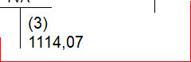

PATRIMOINE AGEN, SCI MARA47 et autres loyers en indivision
TVA

Comptabilisation des frais divers et des différentes taxes
Taxes F, H et frais divers Agen
Ecritures 1 et 3 automatiques en début de trimestre. Ecriture 2 automatique en fin de mois, net de frais de gestion. .
Au paiement (juillet et décembre), le télépaiement génère l'écriture 4 de passage du montant payé au débit du cpte TVA par le crédit du cpte CELR Mara47.
SCI
CELR Mara47
TVA
Véolia TTC
(1) 6684,40
(2) 6200.55
(4) 1114,07
Paiement en ligne, à partir de l'espace PRO
1114,07
Frais divers
Au paiement (télépaiement ou prélèvement), le montant correspondant est porté au crédit du compte "Frais divers"
La TVA est payée en ligne alors que les autres impôts sont prélevés automatiquement à l'échéance. Les autres charges sont prélevées sauf les espaces verts qui est en vrmnt manuel .
CELR Mara47
X
Taxe foncière
Taxe d'habitation
5570,38 loyer
1114,07 TVA
483.85 frais de gestion
Edf
Espaces verts
Assurances
Tenue de compte
